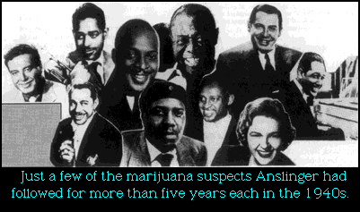

|  |
| |

After retirement, Harry Anslinger personally delivered his papers from his 30 years as the world’s top narc to Pennsylvania State University at State College, PA.
From the Anslinger papers and the Washington, D.C., DEA Library, containing the old FBN (Federal Bureau of Narcotics) papers and memos, we have this: From 1943 to 1948, Anslinger ordered all his agents throughout the country to watch and keep marijuana criminal files on virtually all jazz and swing musicians; but not to bust them until he could coordinate all the jazz busts on the same night.
His goal and dream was to bust them all in one giant nationwide sweep! This would garner the front page of every newspaper in America, and make Anslinger more well-known than his 20-year chief rival, the FBI’ s famous J. Edgar Hoover. The jazz and swing musicians would be shown to the youth of America for what they really were—“dope fiends”.
Anslinger ordered his agents to keep files and constant surveillance on the following “low life” Americans and their bands, singers, and comedians: Thelonius Monk, Louis Armstrong, Les Brown, Count Basie, Cab Calloway, Jimmy Dorsey, Duke Ellington, Dizzy Gillespie, Lionel Hampton, and Andre Kostelanetz. Also under surveillance were the NBC Orchestra, the Milton Berle show, the Coca-Cola program, the Jackie Gleason program, and even the Kate Smith program. All persons we think of today as wonderful Americans and musical innovators.

For five years they were watched and the files grew. From 1943 to 1948 the federal agents waited to make their move.
Typical of a “small time” jazz musicians’ files is the following: “Defendant is a colored man in Camden, Texas, born ----, is 5' 8'' tall, 165 lbs., black complexion, black hair, black eyes. He has scars on left forehead, and a tattoo of a dagger and the word ----, on his right forearm. He is a musician and plays the trumpet in small ‘hot bands.’ He has a very large mouth and thick lips which earned him his name of --------. He is a marijuana smoker.”
Other files are just as ridiculous, racist, and anti-jazz.
The only reason the big bust of the musicians didn’t go down? Anslinger’s superior at the Treasury Department, Assistant Secretary Foley, when informed by Anslinger of the nationwide jazz musician round-up, wrote back, “Mr. Foley disapproves!”
Anslinger’s longtime and closest departmental associate and probably his best friend, Dr. James Munch*, was interviewed in 1978 about Anslinger’s hatred for jazz musicians in the ’30s, ’40s, and ’50s, by Larry Sloman for a book published by Bobbs-Merrill, Reefer Madness, in 1979.
* Dr. Munch, a chemist for the FBN, was widely touted by the Government and press as America’s foremost authority on the effects of marijuana during the 1930s and 40s.
Sloman: “Why did he [Anslinger] want to go after them [the jazz/swing musicians] so much?”
Dr. Munch: “Because the chief effect as far as they [Anslinger, FBN] were concerned was that it lengthened the sense of time, and therefore they could get more grace beats into their music than they could if they simply followed the written [musical] copy”
Sloman: “What’s wrong with that?”
Dr. Munch: “In other words, if you are a musician, you are going to play the thing [music] the way it is printed on a sheet. But, if you’re using marijuana, you are going to work in about twice as much music in between the first note and the second note. That’s what made jazz musicians. The idea that they could jazz things up, liven them up, you see.”
Sloman: “Oh, I see.”
the authorized on-line version of Jack Herer’s “The Emperor Wears No Clothes”
| previous page | Chapter 13 | next page |
|
 |
 |
 |
 |